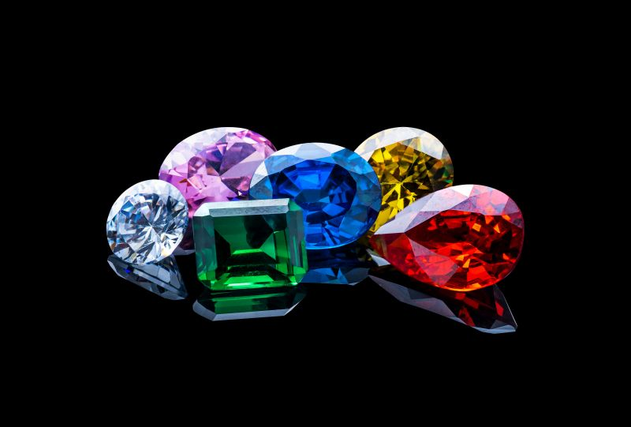
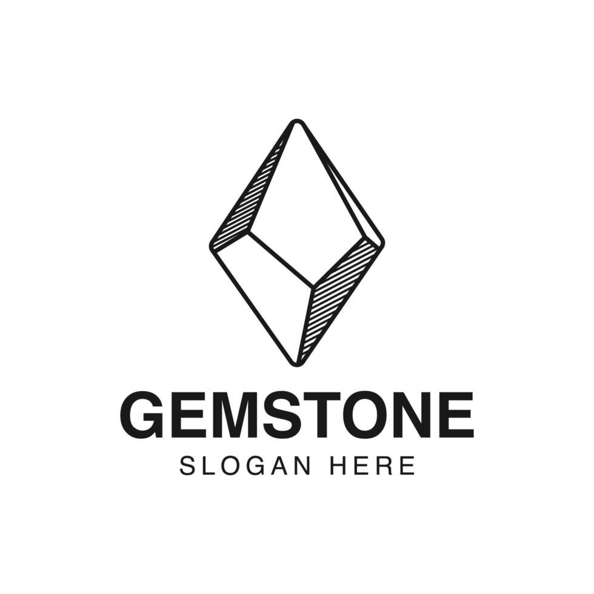
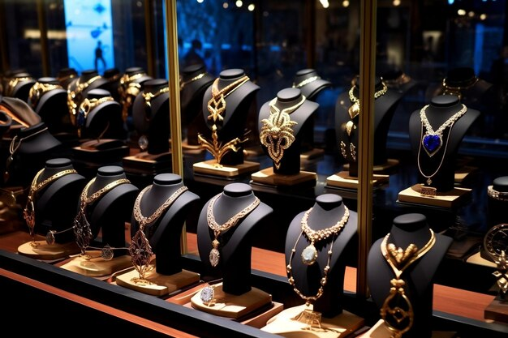

Gemas

Collares

Joyas valiosas

Una gema, también llamada piedra preciosa, es una roca, mineral, vidrio producto orgánico de origen natural, que al ser cortado o pulido se puede usasr en la confección de joyas u objetos artísticos. Las piedras peruanas mas demandadas en el mundo son la crisocola (conocida también como "turquesa peruana") y los ópalos andino (azul) y rosado, según el GIA, Bedón y Carlos Ballinas, un empresario peruano de artesanía ed pieras preciosas, que vive hace tres décadas en Orleans, Francia. En el Perú no existen piedras preciosas, solo semipreciosas.
Piedras Preciosas
- Diamante
- Rubi
- Zafiro
- Esmeralda
Piedras Semipreciosas
- Rodocrosita
- Jaspe
- Obsidiana
- Serpentina
Comercio
- Costo elevado
- Sudáfrica
- Gemas vs Joyas
- Valor en el mercado
